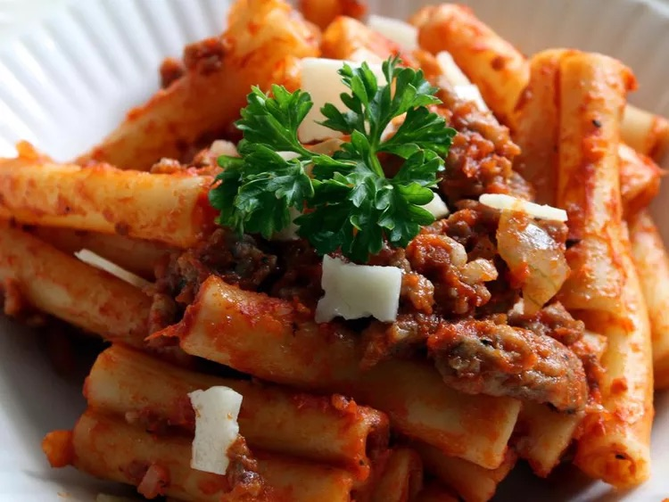

American Chop Suey

Description
American chop suey is a hearty, comforting dish commonly found in the
northeastern United States. It features a savory blend of ground beef,
sautéed onions, green bell peppers, and elbow macaroni, all enveloped in a
rich tomato-based sauce. Often seasoned with garlic and herbs, this
one-pot meal is a staple in many households due to its simplicity and
versatility. Despite its name, it bears little resemblance to traditional
Chinese chop suey, instead drawing inspiration from American cuisine. The
dish is known for its satisfying, robust flavors and ease of preparation,
making it a favorite for family dinners and gatherings.
Ingredients
- 1 (16 ounce) package uncooked elbow macaroni
- 1 pound lean ground beef
- 1 onion, chopped
- 2 (10.75 ounce) cans condensed tomato soup
- salt and pepper to taste
Steps
- Cook macaroni according to package directions.
-
Meanwhile, in a separate large skillet over medium high heat, saute the
ground beef and the onion for 5 to 10 minutes, or until meat is browned
and crumbly. Drain thoroughly and leave the meat and onion in the
skillet. Pour the two cans of tomato soup into the skillet and stir well
to combine.
-
When noodles are done, drain thoroughly and return noodles to the pot.
Add the hamburger mixture from the skillet to the pot. Mix well and
season with salt and pepper to taste.